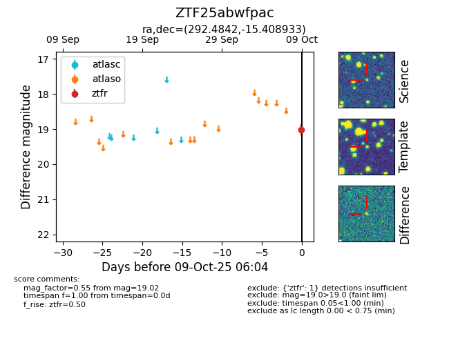

FINK: ZTF25abwfpac
Lasair: ZTF25abwfpac
ALeRCE: ZTF25abwfpac
ZTF25abwfpac (ztf,fink)
equatorial (ra, dec) = (292.4842,-15.40893)
galactic (l, b) = (23.2021,-15.34373)

last ztfr=19.02
1 ztfr detections